Viewer3D Help
Index
Viewer3D (Intro)
This viewer can be used to interactively view any kind of 2D, 3D and 4D image volumes like CT and MRI.
It includes:
Maximum intensity projections (MIP)
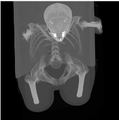
|
Volume Rendering (VR)
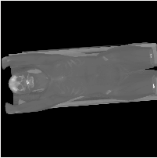
|
Colored Volume Rendering
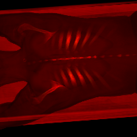
|
Phong shaded Volume rendering.
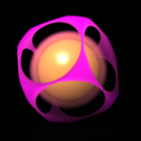
|
SliceView
|
Distance Measurement
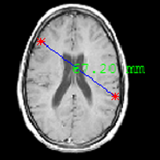
|
Volume Measurment
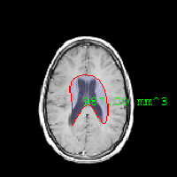
|
Active Contour Segmentation
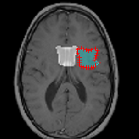
|
Shear-Warp
The fast render algorithm which used is based on a c-code implementation of the Shear-Warp transform.
Instead of rotating the viewer rays the volume slices are sheared, and the rays go parallel through
the volume allowing 2D interpolation instead of 3D, and efficient caching of data
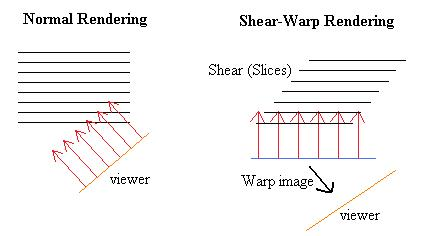
The intermediate image after rendering through the sheared slices must be warped to
get the correct final image.
Starting Viewer3D
Just start with
VIEWER3D
Or to display one or more matlab volumes
VIEWER3D(V); VIEWER3D(V1,V2,V3 ....);
inputs,
V : 2D, 3D or 4D Input image, of type double, single, uint8,
uint16, uint32, int8, int16 or int32
(the render process uses only double calculations)
The Matlab render functions are also available as MEX / c-code in mex_c-code.zip
File
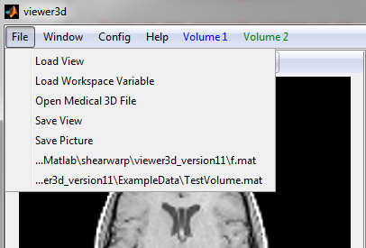
- Load View : Load a Previous Saved Render
- Load Worksapce Variable: Load a 2D,3D or 4D (volume) variable from the Matlab Workspace
- Open Medical 3D : Load medical image file(s) (for example Dicom)
- Save View : Save render data to a matlab file.
- Save Picture : Save a "Screenshot" to an image file (.png or .jpg)
- ...Filename : Fast load previous saved data
Window
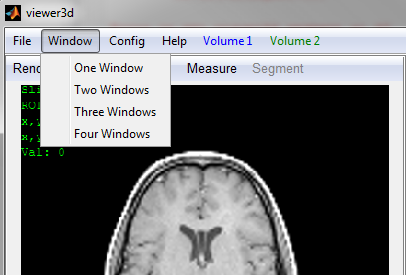
Set the amount of separate render-windows in the Viewer3d.
Config
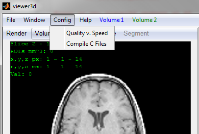
- Quality v. Speed: Change Config options, suchs as size-used for rendering, allowing fast-coarse renders, or fine slow renders.
- Compile C Files: Will compile c-coded files to make the Viewer3d much faster
Help
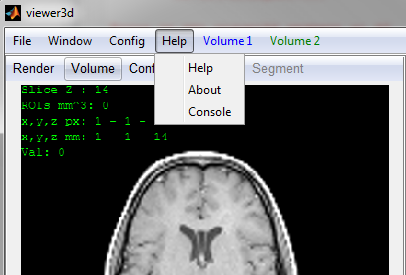
- Help : Display this help document
- About : Display version an author information
- Console : Matlab will go in debuging mode, allowing you to view the contents of the data-struct containing all the render data
Volume 1
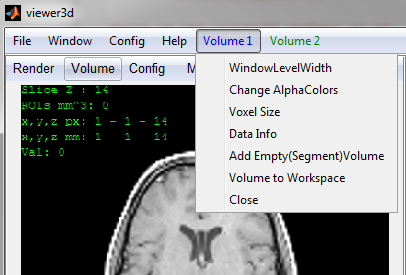
- WindowLevelWidth : Change the Window Level / Width. Thus Contrast and brightness setting of the Volume
- Change AlphaColors : Change the rendered transparency and color of the volume greyvalues
- VoxelSize : Change the x,y,z size of each pixel/voxel (Scaling)
- Data Info : Show available info from the medical-data file (for example dicom info)
- Add Empty(Segment) Volume: Add an empty volume (Here shown in green), which can be used to store data during segmentation of the original volume
- Volume to Workspace: Will create the variables VolumeData (Containin the voxeldata), VolumeInfo (struct with additional info) and VolumScales in the default Matlab Workspace, so you can use it with your own matlab code
- Close : Will remove this volume from the Viewer3d data
Render
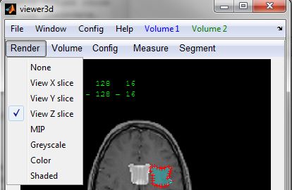
- None : Display a black image
- View X,Y,Z : Display a slice of the image Volume. In this mode you can also Measure and Segment an Image
- MIP : Maximum intensity render
- Greyscale, Color, Shaded : Volume Rendering. You can change the Colors and Transparancy in the "Volume x, Change AlphaColor" menu
Volume
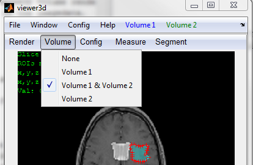
Select the volume(s) which you want to render. You can segment an image if the render is "slice x,y,z" and you select multiple volumes from which one is a new-empty(Segmentation volume) shown in green.
Config
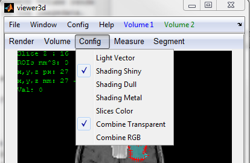
- Light Vector: Change the direction of the light in the Shaded render
- Shading shiny, Dull, Metal: Change the material properties for shaded render
- Slices Color : Use the AlphaColormap to color the slices, in "slice x,y,z" render mode
- Combine Transparent, RGB : When two Volumes are select, you can combine the renders, or RGB wise, or overlay wise
Measure

Only available in slice render mode
- Distance : With the left mouse button you can click a line between two points. This line will show the distance between the points.
- Roi: With the left mouse button you can click a few points, after double-click you finish the ROI. You can see the volume of the ROI and In the corner of the screen you can see the combined volume of all ROI's
You can also drag measurement points, and lines with the left mouse button. Or remove a measurement with the right mouse button
Segment
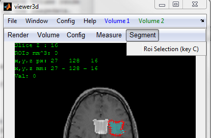
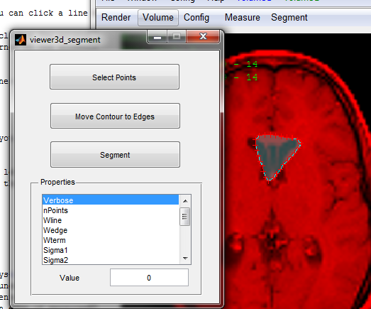
Only available in slice render mode, and if you selected two or more volumes from which one is an editable volume (shown in green).
- Roi Selection: You can click points with the left mouse button, after double-click you finish the ROI.
- You can drag the ROI and points of the ROI with the left mouse button./li>
- To move the select ROI nearer to the boundaries, click "Move Contour to Edges"
- To really segment the Structure, click "Segment"
- For moving the ROI to the boundaries, a snake is used. The Snake-Properties can be changed in the Properties window. Note, Change Verbose to 1, to see how the snake behaves
Mouse Control
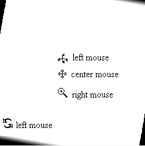
- Zoom: Right mouse button
- Pan : Center mouse button
- Change Slice: Scroll button, or arrow keys
- Rotate around Z: Left mouse button at boundary of renderimage
- Rotate around XY: Left mouse button in center of renderimage
- Remove measurement: Right mouse button on edge of measurement
- Drag Measurement : Left mouse button on edge of measurement
- Drag Points : Left mouse button on points of measurement/segmentation
Change Alphacolors Window
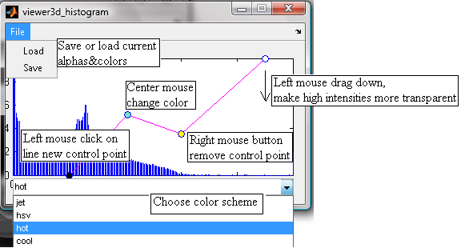
The graph is showing the histogram of the data, with on the x-axis the intensity values.
The curve shown is a mapping from intensity to alpha and color, with on the y-axis
the opacity of the voxel form zero (transparent) to one (solid)
- drag a point with the left mouse button in y direction down to make a voxel of a certain intensity more transparent.
- click with the left mouse button on the line between the poinst to create a new (control) point
- click on a control point with the right mouse button to remove it.
- click on a control point with the center mouse button to change its color